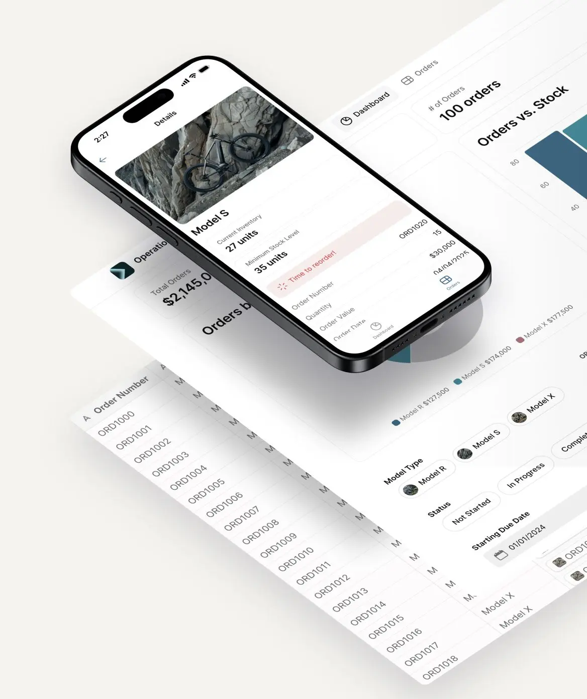
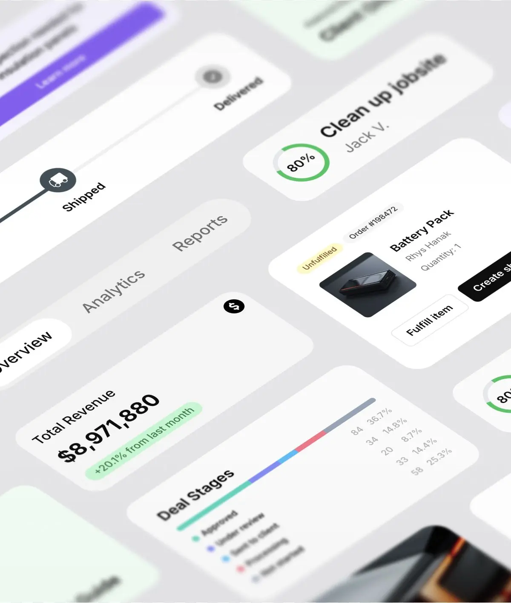

/ SWIFTBUILD.AGENCY
AI workflows that actually get used.
We build AI into the real operating flow: inbox, CRM, documents, reporting and the human approvals that keep quality under control.
/
Built with real operators
/
Eliminate the bottlenecks that hold your team back.
Support messages sit too long before anyone knows what matters.
Documents and CRM updates depend on manual copy-paste.
Reporting takes hours because the data lives in different places.
/ Our services
Automation solutions
AI only matters when it removes work from the daily operating system of the company. These are the flows we implement.
Workflow audit and AI roadmap
Map the manual work, choose the first workflow and define what success should look like.

Internal AI tools
Dashboards, review views and action panels that make AI output usable for the team.
Document and data workflows
Extract, compare and route information from documents without losing human control.

CRM and follow-up automation
Summaries, next steps, reminders and updates so opportunities do not disappear.
/ Our approach
Discover
We study the workflow as it really happens: inputs, systems, decisions, edge cases and who owns the result.
Plan
We choose one narrow flow with available data, clear business value and a measurable outcome.
Build
We connect tools, build the AI logic and create the internal interface people will actually use.
Scale
We measure adoption, improve the flow and decide what should be automated next.
The goal is not to launch AI. The goal is to remove repeated work without removing responsibility.
Data, control and automation
Useful automation must show what it read, what it changed and where a human needs to approve.
Registry and verification workflows
The best first project is the boring workflow that quietly steals time every week.
Customer flow and CRM operations
The difference is clear
- Real implementation in your systems
- Human review and fallbacks where quality matters
- Internal tools, not just prompts
- Measured effect before scaling
- Built around daily operations
Other AI projects
- A demo that lives outside the workflow
- No owner for quality or exceptions
- Manual copy-paste remains
- Hard to measure if anyone uses it
- More tools instead of less work
/ FAQ
Questions before we start.
What happens in the first audit?
We find the workflow that wastes time, map the systems involved and define the first automation worth building.
Do we need to replace our existing tools?
Usually not. The strongest implementation connects AI to the systems your team already uses.
What do you actually build?
AI logic, automations, integrations, internal interfaces, logs and review routines around one workflow.
How fast can we see something concrete?
The first milestone is normally a small pilot scope, then a controlled build around that workflow.
/ Work with us
Tell us where manual work still slows the team down.
Send the workflow you want to fix first. We will reply with what should be automated, what should stay human and what a pilot could look like.
info@swiftbuild.agency